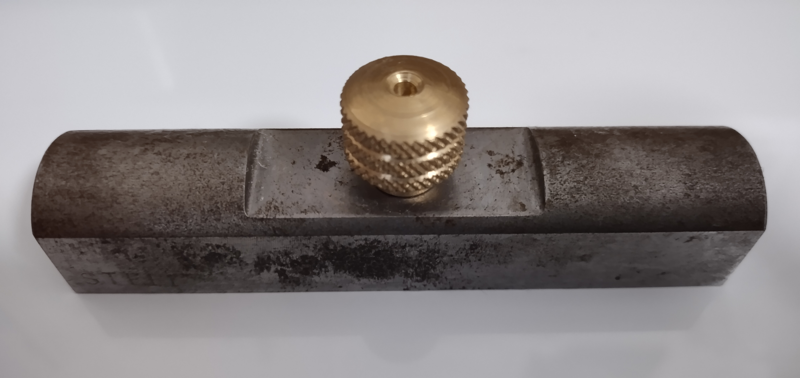
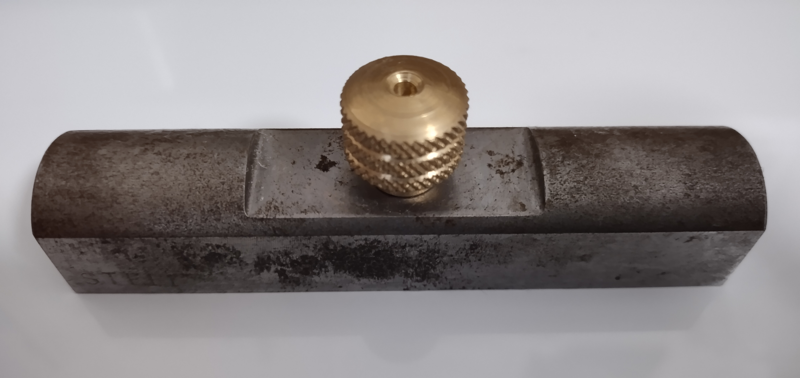
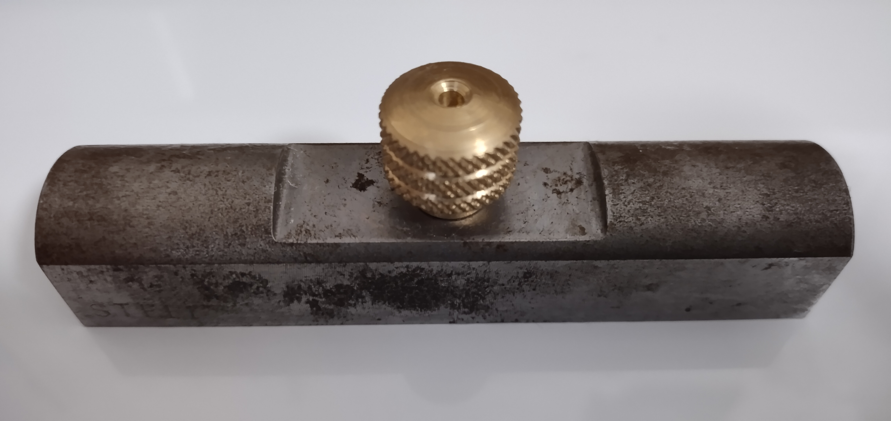

エネルギー機械コースの実習では旋盤やボール盤、 フライス盤などの工作機械を用いた金属加工をし、 文鎮や空気エンジンなどの様々な製品づくりに取り組んでいます。

実習で使用する切削工具
旋盤では様々な金属材料をバイトやドリル、 エンドミルで切削し空気エンジンのピストン、文鎮つまみ、回転軸などを製作・加工しています。実習で使用するのは汎用旋盤であり、 デジタルメータや自動送り機能などがあり、大変使いやすく加工品の精度も抜群です。
実習で使用する切削工具
ボール盤 では主にドリルを使用し、ネジや回転軸を通す穴、雌ネジ の下穴などを開けています。 実習設備には卓上ボール盤と直立ボール盤の二つがあり、開ける穴の大きさによってそれぞれを使い分けています。 穴を開ける前には必ずハイトゲージでけがきをし、センターポンチでポンチ穴を打っています。
実習で使用する切削工具
材料に溝を掘る、より精度の高い位置にエンドミルで穴を開けたいといった際にはフライス盤を使います。実習で使用する フライス盤にもデジタルメータや自動送りなど機能がありサイズもかなり大きいです。台数が限られているため基本的には 一人ずつ使用しています。
